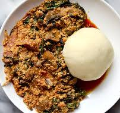

The Swallow Combos
Iyan with Egusi soup (Pounded Yam with Melon soup)

Description
Ingredients
For the Iyan (Pounded Yam):
- 1 tuber of yam (medium size)
- Water
- Salt
For the Egusi soup (Melon soup):
- 1 tin of Grinded Egusi
- Blended Tomatoes(6 pieces), peppers(8 pieces), and onion(1 or 3, depends on size).
- Chopped spring onion
- Palm oil and Vegetable oil(1 serving spoon)
- Sliced Ugwu leaves(2 bunches)
- Crayfish (grinded/powder)
- Sliced boiled Kpomo (35-40 pieces)
- Seasoning cubes (4-7 pieces, depends on types)
- Salt (1 teaspoon)
- Curry (1 tsp)
- Ginger & Garlic paste (1 tsp [optional])
Directions
For the Iyan:
- Peel the yam, slice, wash until very clean and cook with water and salt till completely soft.
- Then prepare a mortar and pestle. Pound the yam till soft and sticky. (Sprink yam water at intervals)
- Mould into desired size and keep aside.
For the Egusi soup:
- Mix the egusi with water to form paste
- Add the Palm oil into the pot and fry the blended tomatoes mix for 5 minutes
- Scoop out, add little Vegetable oil and add the egusi mix gradually
- Fry for 3-4 minutes then add the fried tomatoes mix, and small water. Add the Kpomo, salt, seasoning cubes and curry.
- Cook for 30 minutes, add in the cray fish, cook for 5 more minutes then finally add the ginger/garlic paste and sliced Ugwu leaves and spring onions
- Leave it to steam for 5 minutes.
- Now, ready to serve with the Iyan.
Home